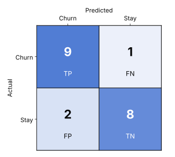
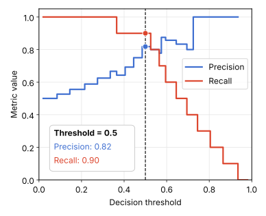
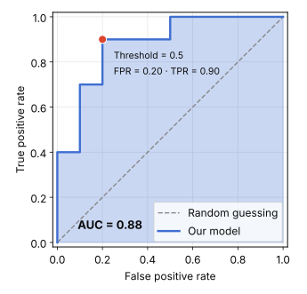

Classification
Common Logistic Regression Metrics
Imagine building a logistic regression model to predict customer churn. After evaluating its predictions, you discover that it achieves 85% accuracy.
Sounds good, right?
But what if the model misses half of the customers who are about to leave? Or what if it incorrectly flags hundreds of loyal customers as potential churners?
Suddenly, 85% accuracy doesn't tell the whole story.
Evaluating a classification model requires more than a single number. Different metrics measure different aspects of performance, and choosing the right one depends on the problem you're trying to solve.
In this post, we explore how to evaluate a logistic regression model, from understanding its classification errors to assessing its ability to distinguish between classes. We use a simple customer churn example throughout to understand how evaluation metrics work, how they relate to one another, and how to choose the right metric for a given business problem. It builds on Logistic Regression, where the churn model is introduced.
How Logistic Regression Makes a Decision
Before evaluating a logistic regression model, let's understand how it makes predictions.
Unlike linear regression, which predicts a continuous numerical value, logistic regression estimates the probability that an observation belongs to a particular class. For example, a customer churn model might estimate that a customer has an 80% probability of cancelling their subscription.
But a probability isn't yet a classification. To convert probabilities into binary predictions, we introduce a decision threshold. A common default is 0.5:
- Probability ≥ 0.5 → predict churn.
- Probability < 0.5 → predict no churn.
The threshold determines how the model translates probabilities into decisions. It is a setting we can adjust depending on our objectives.
- Lowering the threshold to 0.3 means that more customers will be classified as potential churners. This may help us identify more customers who eventually leave, but it can also increase false alarms.
- Raising the threshold to 0.7 makes the model more conservative about predicting churn. This may reduce false alarms, but it can also cause the model to miss customers who actually leave.
The key idea: the decision threshold influences the predictions, and the predictions determine the evaluation metrics.
Let's see how this works with a concrete example. Imagine our model evaluates 20 customers: 10 actually churned and 10 stayed. After applying a decision threshold of 0.5, the model produces the following results:
| Customer outcome | Number of customers |
|---|---|
| Correctly identified churners | 9 |
| Churners incorrectly predicted to stay | 1 |
| Customers incorrectly predicted to churn | 2 |
| Correctly identified customers who stayed | 8 |
These four outcomes form the foundation of the confusion matrix.
The Confusion Matrix: Where the Metrics Come From
A confusion matrix compares a model's predictions with the actual outcomes. It shows not only how many predictions were correct, but also which types of mistakes the model made (Chart 1).

The four cells represent four possible outcomes:
- True Positive (TP) = 9. The model predicted that nine customers would churn, and all nine actually churned.
- False Negative (FN) = 1. One customer actually churned, but the model predicted that they would stay.
- False Positive (FP) = 2. The model predicted that two customers would churn, but both stayed.
- True Negative (TN) = 8. The model correctly predicted that eight customers would stay.
These outcomes reveal something that accuracy alone cannot show: a model can make different types of mistakes, and those mistakes may have different consequences. Missing a customer who is about to cancel might mean losing an opportunity to retain them. Incorrectly flagging a loyal customer might mean wasting resources on an unnecessary retention campaign. The confusion matrix makes these errors visible.
Calculating the confusion matrix in Python
Using scikit-learn, we can calculate the confusion matrix directly:
from sklearn.metrics import confusion_matrix
y_true = [1] * 10 + [0] * 10
y_pred = (
[1] * 9 + [0] * 1 +
[1] * 2 + [0] * 8
)
cm = confusion_matrix(y_true, y_pred)
print(cm)[[8 2]
[1 9]]By default, scikit-learn orders the classes as [0, 1]. Rows represent actual classes, while columns represent predicted classes. Therefore, the matrix above uses this layout, with the negative class first:
| Actual / Predicted | Predicted Stay (0) | Predicted Churn (1) |
|---|---|---|
| Actual Stay (0) | TN = 8 | FP = 2 |
| Actual Churn (1) | FN = 1 | TP = 9 |
The matrix contains exactly the same information as Chart 1. Only the layout differs. Now that we understand the four outcomes, we can use them to calculate different evaluation metrics.
Evaluating Predictions at a Fixed Threshold
The following metrics evaluate the predictions generated at one particular decision threshold, here 0.5.
Accuracy
Accuracy measures the proportion of all predictions that are correct. In other words, it answers the question: how often did the model make the correct prediction?
Accuracy = TP + TNTP + TN + FP + FN = 9 + 820 = 0.85
Our model correctly classified 17 out of 20 customers, giving it an accuracy of 85%. In Python:
from sklearn.metrics import accuracy_score
accuracy = accuracy_score(y_true, y_pred)
print(accuracy)
# 0.85Accuracy is easy to understand and useful when the classes are reasonably balanced and different types of errors have similar consequences. However, it can be misleading when the classes are imbalanced.
Imagine a dataset in which only 5% of customers churn. A model that predicts that every customer will stay would achieve 95% accuracy, despite failing to identify a single churner. The model appears successful based on accuracy alone, but it is useless for identifying customers at risk of leaving. This is why we need additional metrics.
Precision
Precision measures how many predicted positive cases are actually positive. For our churn model, it answers: of all the customers predicted to churn, how many actually churned?
Precision = TPTP + FP = 99 + 2 = 911 ≈ 0.818
Our model achieves a precision of approximately 81.8%. This means that around 81.8% of the customers flagged as potential churners actually churned. In Python:
from sklearn.metrics import precision_score
precision = precision_score(y_true, y_pred)
print(precision)
# 0.8182Precision becomes particularly important when false positives are costly. For example, suppose a company offers personal discounts to customers predicted to churn. If the model incorrectly identifies customers who were going to stay anyway, the company may spend money unnecessarily. A model with higher precision can help reduce these unnecessary interventions.
However, precision doesn't tell us how many actual churners the model missed. For that, we need recall.
Recall
Recall measures the proportion of actual positive cases correctly identified by the model. For our churn model, it answers: of all the customers who actually churned, how many did the model identify?
Recall = TPTP + FN = 99 + 1 = 910 = 0.9
Our model achieves a recall of 90%. It successfully identified nine of the ten customers who churned. In Python:
from sklearn.metrics import recall_score
recall = recall_score(y_true, y_pred)
print(recall)
# 0.9Recall is also known as sensitivity or the true positive rate (TPR). It is especially important when false negatives are costly. For example, if a company wants to identify as many potential churners as possible, missing a customer who is about to leave may be more costly than contacting a customer who would have stayed anyway. In this situation, recall may be more important than precision.
But there is a challenge: improving recall can sometimes reduce precision.
The Precision–Recall Trade-off
Precision focuses on the reliability of positive predictions. Recall focuses on the proportion of actual positive cases identified. Changing the decision threshold can shift the balance between them (Chart 2).
- Lowering the threshold. More customers are classified as potential churners. The model identifies more actual churners, so recall generally increases, but false positives may increase, potentially reducing precision.
- Raising the threshold. Fewer customers are classified as potential churners. The model makes fewer positive predictions, so precision may increase, but recall may decrease because some actual churners are missed.

The exact changes depend on the model's predicted probabilities and the dataset, but this is the general pattern. There is no universally optimal threshold. The right choice depends on the business objective and the relative costs of false positives and false negatives. For example, a company with limited resources for retention campaigns may prefer higher precision. A company that considers every missed churner costly may prioritise recall.
But what if both precision and recall matter? This is where the F1 score becomes useful.
F1 Score
The F1 score combines precision and recall into a single metric using their harmonic mean.
F1 = 2 × Precision × RecallPrecision + Recall = 2 × 0.8182 × 0.90.8182 + 0.9 ≈ 0.857
Our model achieves an F1 score of approximately 85.7%. In Python:
from sklearn.metrics import f1_score
f1 = f1_score(y_true, y_pred)
print(f1)
# 0.8571The F1 score is useful when we want to balance precision and recall, particularly when the positive class is more important than the negative class. However, it has limitations. It does not account for true negatives, and it treats precision and recall symmetrically. If false positives and false negatives have substantially different business costs, the F1 score may not reflect the objective perfectly. In such cases, it is often better to examine precision and recall separately or consider a metric that assigns different importance to them.
So far, we've evaluated the model's predictions at one particular threshold. But what if we want to understand how well the model distinguishes between churners and non-churners across different thresholds? That's where the ROC curve comes in.
Evaluating Model Performance Across Thresholds
ROC Curve
The Receiver Operating Characteristic (ROC) curve illustrates the relationship between the true positive rate and the false positive rate across different decision thresholds. Remember that recall is the same as the true positive rate:
TPR = TPTP + FN
The false positive rate measures the proportion of actual negative cases incorrectly classified as positive:
FPR = FPFP + TN
For our model, at the original threshold:
TPR = 910 = 0.9 FPR = 210 = 0.2
The ROC curve plots the true positive rate on the y-axis against the false positive rate on the x-axis. Each point corresponds to a different decision threshold. As we change the threshold, the model produces different classifications, resulting in different combinations of true positives and false positives (Chart 3).

How should we read the curve?
- Closer to the top-left corner. The model achieves a high true positive rate with a low false positive rate, indicating better discrimination.
- Along the diagonal. The model performs approximately like random ranking.
- Below the diagonal. The ranking is worse than random in the usual interpretation, although reversing the score direction can change this.
The ROC curve helps us understand the trade-off between identifying positive cases and incorrectly flagging negative cases across thresholds.
Calculating the ROC curve in Python
Scikit-learn provides RocCurveDisplay to calculate and visualise the ROC curve. Importantly, the ROC curve requires probability scores or decision scores rather than only the final binary predictions.
import matplotlib.pyplot as plt
from sklearn.metrics import RocCurveDisplay
from sklearn.linear_model import LogisticRegression
# Fit a logistic regression model
model = LogisticRegression()
model.fit(X_train, y_train)
# Obtain probabilities for the positive class
y_proba = model.predict_proba(X_test)[:, 1]
# Plot the ROC curve
RocCurveDisplay.from_predictions(y_test, y_proba)
plt.show()Here, predict_proba() returns the estimated probability for each class. Selecting [:, 1] extracts the probability of the positive class, assumed here to represent churn. The ROC curve uses these probability scores to evaluate the model across different thresholds.
AUC: Area Under the ROC Curve
The Area Under the ROC Curve, commonly called ROC-AUC, summarises the ROC curve in a single number. Its value generally ranges from 0 to 1, assuming the positive class is scored in the intended direction. How should we interpret AUC?
- AUC = 0.5. The model has discrimination comparable to random ranking.
- AUC closer to 1. The model generally ranks positive cases above negative cases more effectively.
- AUC = 1.0. The model perfectly separates the positive and negative cases in terms of their scores.
AUC is particularly useful when comparing models because it evaluates their ranking ability across thresholds rather than focusing on one specific threshold.
However, there is an important distinction: an AUC of 0.85 does not mean that 85% of predictions are correct. Instead, ROC-AUC can be interpreted as the probability that the model assigns a higher score to a randomly selected positive case than to a randomly selected negative case, with ties conventionally contributing half.
A model can have a high ROC-AUC but still perform poorly at a particular threshold. For example, the model might rank customers effectively but use a threshold that produces too many false positives for the company's needs. AUC therefore complements accuracy, precision, recall and F1 rather than replacing them. We can calculate ROC-AUC directly with scikit-learn:
from sklearn.metrics import roc_auc_score
auc = roc_auc_score(y_test, y_proba)
print(auc)The result is a single value summarising the model's ability to distinguish between positive and negative cases.
One additional consideration is class imbalance. When positive cases are rare, ROC-AUC may not fully communicate how useful positive predictions are in practice. A Precision–Recall curve and its associated area, PR-AUC, can provide a more informative view of positive-class performance in such situations.
Which Metric Should You Use?
We've explored several metrics, but which one should you prioritise? The answer depends on what the model is supposed to achieve and which mistakes matter most.
- Accuracy. Classes are reasonably balanced and error costs are similar. It measures the overall proportion of correct predictions.
- Precision. False positives are costly. It focuses on the reliability of positive predictions.
- Recall. False negatives are costly. It measures how many actual positive cases are identified.
- F1 score. Both precision and recall matter. It combines the two.
- ROC-AUC. You want to compare discrimination across thresholds. It summarises ranking performance across all thresholds.
- Precision–Recall curve and PR-AUC. Positive cases are very rare. It focuses on precision and recall for the positive class.
Consider a few practical examples:
- Customer churn prediction. If the company wants to identify as many potential churners as possible, recall may be the priority. If retention campaigns are expensive, precision may matter more.
- Fraud detection. Missing a fraudulent transaction can be costly, making recall important. However, excessive false alarms can disrupt legitimate transactions, so precision also matters.
- Medical screening. Missing a person with a serious condition can have significant consequences. Recall may therefore be prioritised, while precision remains important for managing unnecessary follow-up tests.
- Comparing classification models. ROC-AUC can help compare how well models rank positive cases above negative cases across thresholds. When positive cases are rare, PR-AUC can provide additional insight into the quality of positive predictions.
The central lesson is that metric selection should follow the problem, not the other way around. Before choosing a metric, ask:
- Which type of error is more costly?
- Are the classes balanced or imbalanced?
- Do we need a reliable ranking, accurate classifications, or both?
- What trade-off between false positives and false negatives is acceptable?
These questions help translate model evaluation into meaningful business decisions.
Key takeaways
- The confusion matrix is the foundation: it shows the four possible outcomes of classification, including both kinds of mistake.
- Accuracy measures overall correctness, precision evaluates the reliability of positive predictions, and recall measures how many actual positives the model identifies. The F1 score combines the last two.
- The ROC curve and AUC evaluate the model's ranking performance across thresholds. An AUC of 0.85 does not mean 85% of predictions are correct.
- Each metric answers a different question and none tells the complete story alone. A good model is not simply one with a high score, but one whose performance meets the needs of the problem it was built to solve.
Related posts
- Logistic Regression How to predict a yes/no outcome as a probability and choose a decision threshold.
- Evaluating and Interpreting a Regression Model The matching metrics for predicting a number instead of a category.